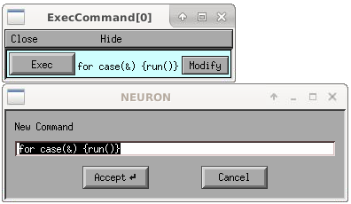

Family
For several values of a variable, execute an action. Basically just a form for specifying a for loop.
Usage: h.makeFamily() constructs a Family and maps it to the screen. The Family
instance is destroyed when its window is dismissed.
The slider value ranges from start to end. Due to the length of time it generally takes to complete an action it is best to use the middle button to select a value with the slider. Dragging the slider button or using it too rapidly will cause many action requests to be ignored since a slider event taking place while handling the previous event is prevented from executing the action recursively. The occasionally has the unintended effect of missing the last action when one releases the mouse button.
Menu items:
- start end numbersteps:
Beginning and final values of the loop variable. The number of steps includes these limiting values so should be at least 2 but if it is 1 then the loop reduces to only the start value.
- Variable:
Pops up a SymChooser for selection of a variable name. The Family object cannot work without a variable since there is no default.
- Action:
Pops up a stringchooser for selection of the body of the loop. The default run() action is typically what is desired.
- Run:
Starts the loop
- Stop – Now:
Stops the loop even in the middle of the action. (The
stdrun.hocrun()action regularly checks thestop_runvariable.)- Stop – Atendofaction:
Waits for the current action to finish before stopping.
- Cont:
Starts the action with the next value of the variable. (If the previous action was stopped in the middle, that action is not restarted where it left off.)
Note
This is function is defined as part of stdrun.hoc which is loaded automatically as part of
from neuron import gui, which is required to ensure the GUI is interactive across different
ways of running NEURON.
Note
This dialog may also be opened from the GUI via
ExecCommand
Usage: h.ExecCommand() or
Specify a command and execute it.
Note
This is function is defined as part of stdrun.hoc which is loaded automatically as part of
from neuron import gui, which is required to ensure the GUI is interactive across different
ways of running NEURON.
GatherVec
Open with or to open programmatically import GUI support, load the library, and then call the function:
from neuron import h, gui
h.load_file('gatherv.hoc')
h.makeGatherVec()

Press “Record” button and plot a new point consisting of the values for specified x and y variables. (x or y crosshair values are good candidates for the y variable and a run parameter is a good candidate for the x variable. Then one does a run, selects a point with crosshairs, and presses the record button on the GatherValues tool)
VectorPlay
Open with or to open programmatically import GUI support, load the library, and then call the function:
from neuron import h, gui
h.load_file('vplay.hoc')
h.makeVectorPlay()
Copy a vector from the clipboard and play it into some chosen (from a Symchooser) variable name. There is button to connect and disconnect (return the default value to the variable) the vector.
VecWrap
Open with or to open programmatically import GUI support, load the library, and then call the function:
from neuron import h, gui
h.load_file('vecwrap.hoc')
h.makeVecWrap()

Copy vector(s) from the clipboard and do various manipulations: Discard left of crosshair, discard right of crosshair, crosshair point becomes origin. Obviously rudimentary but this egg may hatch into something.